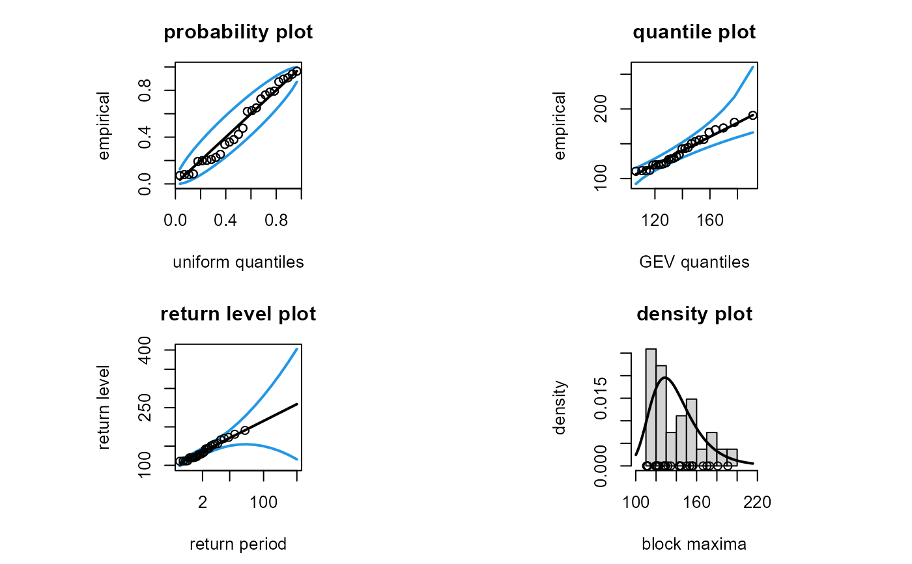
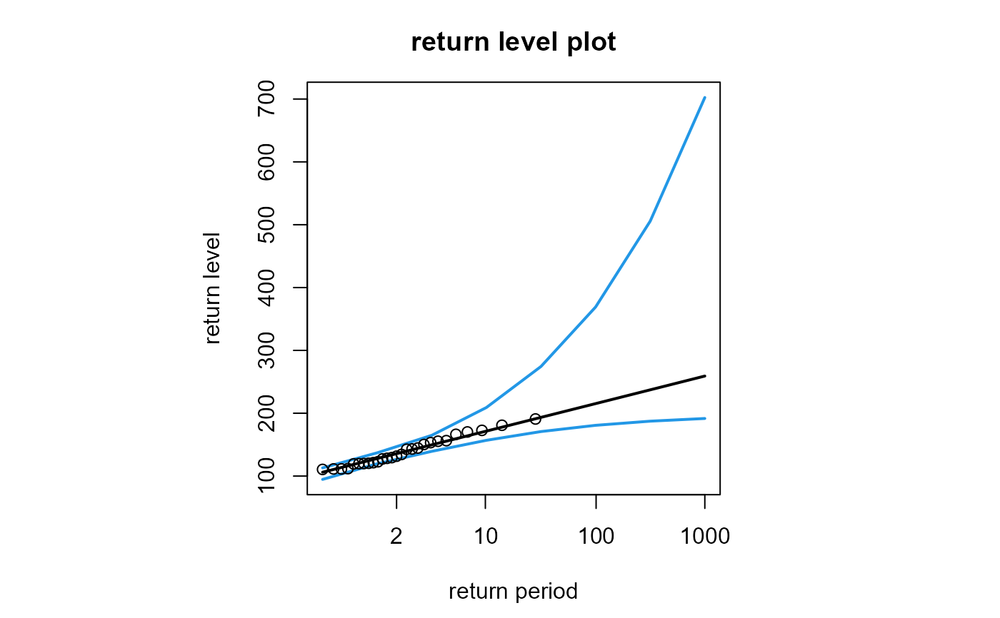
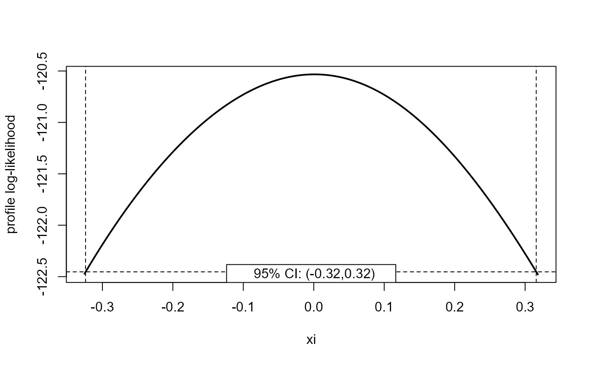
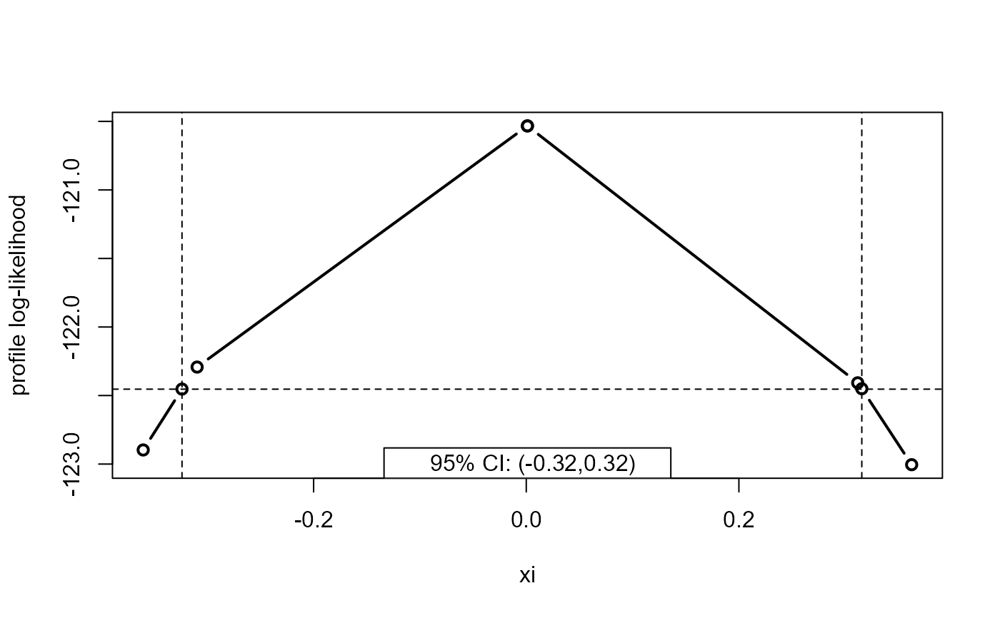
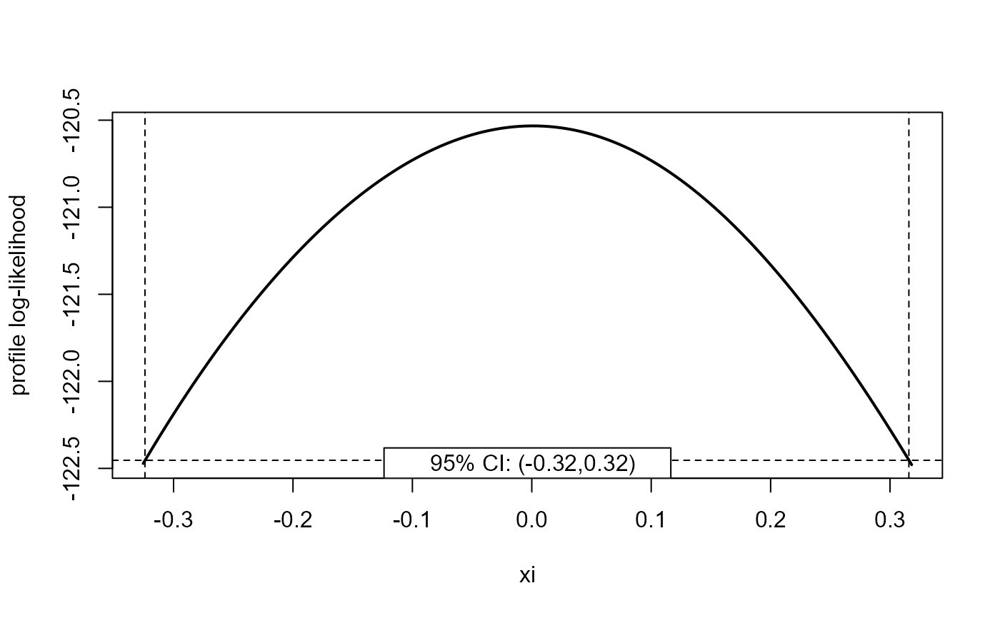
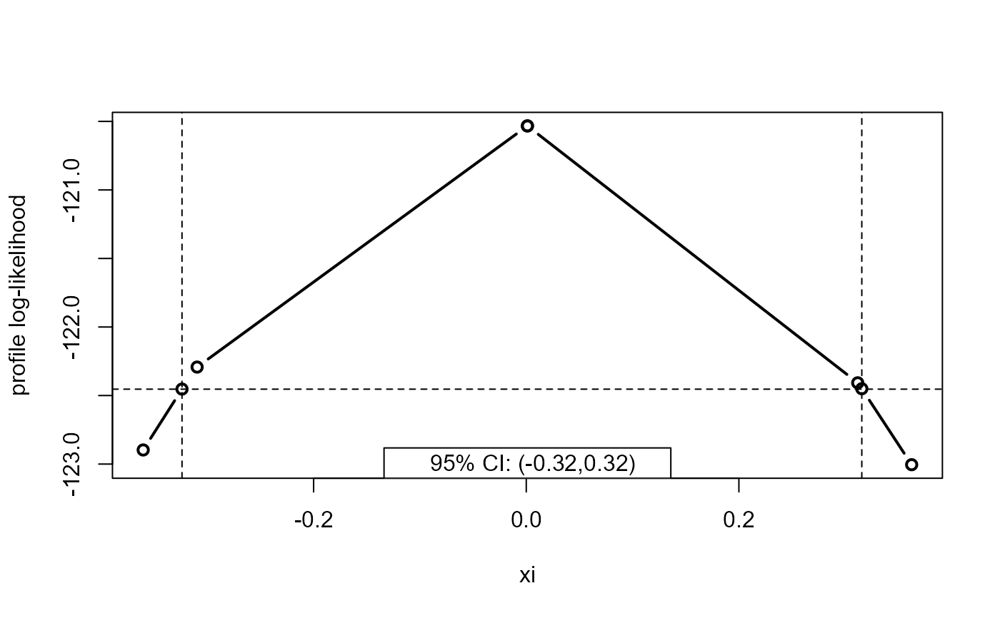

Methods for objects of class "evmissing" returned from gev_mle.
Usage
# S3 method for class 'evmissing'
coef(object, ...)
# S3 method for class 'evmissing'
vcov(object, ...)
# S3 method for class 'evmissing'
nobs(object, ...)
# S3 method for class 'evmissing'
logLik(object, ...)
# S3 method for class 'evmissing'
summary(object, digits = max(3, getOption("digits") - 3L), ...)
# S3 method for class 'summary.evmissing'
print(x, ...)
# S3 method for class 'evmissing'
confint(
object,
parm = "all",
level = 0.95,
profile = FALSE,
mult = 2,
faster = FALSE,
epsilon = 1e-04,
...
)
# S3 method for class 'evmissing'
plot(
x,
adjust = TRUE,
which = c("pp", "qq", "return", "density"),
m = c(2, 10, 100, 1000),
level = 0.95,
profile = TRUE,
num,
npy = 1,
...
)Arguments
- object
An object inheriting from class
"evmissing", a result of a call togev_mle.- ...
Further arguments. Only used in the following cases.
plot.evmissing: to pass graphical parameters to the graphical functionsplot,matplot,abline,lines,matlinesandpoints. In particular,col,ltyandlwdmay be used to control the colour, type and width of lines andpchthe type of plotting symbol. All data points are coloured black in all plots, which cannot be changed.print.summary.evmissing: to pass arguments toprint.
- digits
An integer. Passed to
signifto round the values in the summary.- x
An object returned by
summary.evmissing.- parm
A character vector specifying the parameters for which confidence intervals are to be calculated. The default,
which = "all", produces confidence intervals for all the parameters, that is, \(\mu\), \(\sigma\) and \(\xi\). Otherwise,parmmust be a subset ofc("mu", "sigma", "xi").- level
The confidence level required. A numeric scalar in (0, 1).
- profile
A logical scalar. If
TRUEthen confidence intervals based on a profile log-likelihood are returned. IfFALSEthen intervals based on approximate large sample normal theory, which are symmetric about the MLE, are returned.- mult
A positive numeric scalar. Controls the increment by which the parameter of interest is increased/decreased when profiling above/below its MLE. The increment is
mult * se / 100whereseis the estimated standard error of the estimator of the parameter. Decreasingmultprofiles at more points but will be slower. The default,mult = 2should be sufficiently small to produce a smooth looking plot of the profile log-likelihood usingplot.confint_gev. To estimate the confidence limits more quickly, the value ofmultcan be increased and/or the argumentfasterset toTRUE.- faster
A logical scalar. If
faster = TRUEthen the profiling of the log-likelihood in search of a lower (upper) confidence limit is started at the corresponding symmetric lower (upper) confidence limit.- epsilon
Only relevant if
profile = TRUE. A numeric vector of values that determine the accuracy of the confidence limits.epsilonis recycled to the length of the parameter vectorparm.If
epsilon[i] > 0then this value is passed as the argumentepsilonto theitp::itpfunction, which estimates the parameter values for which the profile log-likelihood for parameteridrops to the value that defines the confidence limits, once profiling has been successful in finding an interval within which this value lies.If
epsilon[i] < 0quadratic interpolation is used, which will tend to be faster.If
epsilon[i] = 0then linear interpolation is used, which will be faster still.
- adjust
If
adjust = TRUEthen the diagnostic plots produced byplot.evmissingare adjusted for the number of non-missing observations contributing to each block maximum. Otherwise, no adjustment is made.- which
If supplied, this must either be a character scalar, one of
"pp","qq","return"or"density"or a numeric scalar in1:4, with1corresponding to"pp"etc. Ifwhichis missing then all four plots are produced in a 2 by 2 display.- m
A numeric vector of return periods to label on the horizontal axis of the return level plot. Along with the data, the smallest and largest return period values in
minfluence the range of return periods for which return level estimates are plotted. All values inmmust be greater than 1.- num
An integer scalar. The number of return level estimates to calculate to produce the return level curve and pointwise confidence limits in the return level plot. The default setting is approximately 5 times
log(max(m), base = 10). Ifprofile = TRUEthen reducingnumwill speed up the calculation of the confidence limits, at the expense of a reduction in smoothness of the curves.- npy
A numeric scalar. The number \(n_{py}\) of block maxima per year. If the blocks are of length 1 year then
npy = 1. This is only used in the return level plot.
Value
coef.evmissing: a numeric vector of length 3 with names
c("mu", "sigma", "xi"). The MLEs of the parameters \(\mu\),
\(\sigma\) and \(\xi\).
vcov.evmissing: a \(3 \times 3\) matrix with row and column
names c("mu", "sigma", "xi"). The estimated variance-covariance matrix
for the model parameters \(\mu\), \(\sigma\) and \(\xi\).
nobs.evmissing: a numeric scalar. The number of maxima used in the model
fit.
logLik.evmissing: an object of class "logLik": a numeric scalar
with value equal to the maximised log-likelihood. The returned object
also has attributes nobs, the number of maxima used in the model fit
and "df" (degrees of freedom), which is equal to the number of total
number of parameters estimated (3).
summary.evmissing: an object with class "summary.evmissing" containing
the original function call and a matrix of estimates and estimated
standard errors with row names c("mu", "sigma", "xi"). The object is
printed by print.summary.evmissing.
print.summary.evmissing: the argument x is returned, invisibly.
confint.evmissing: an object of class c("confint_gev", "evmissing").
A numeric matrix with 2 columns giving the lower and upper confidence
limits for each parameter. These columns are labelled as (1-level)/2 and
1-(1-level)/2, expressed as a percentage, by default 2.5% and 97.5%.
The row names are the names of the parameters supplied in parm.
The ordering "mu", "sigma", "xi" is retained regardless of the
ordering of the parameters in parm.
If profile = TRUE then the returned object has extra attributes crit,
level and for_plot. The latter is a named list of length 3 with
components mu, sigma and xi. Each components is a 2-column numeric
matrix. The first column (named mu_values etc) contains values of the
parameter and the second column the corresponding values of the profile
log-likelihood. The profile log-likelihood is equal to the attribute
crit at the limits of the confidence interval. The attribute level is
the input argument level.
plot.evmissing: if a return level plot has been requested, a 3-column
matrix containing the values plotted in the return level plot. Column 2
contains the estimated return levels and columns 1 and 3 the lower and
upper confidence limits.
Details
The plots produced by plot.evmissing are of a similar form to the
visual diagnostics is the ismev package and described in Coles (2001),
that is, a probability plot (which = "pp" or which = 1), a quantile
plot (which ="qq" of which = 2), a return level plot
(which = "return" or which = 3) and a histogram of block maxima with a
fitted GEV density superimposed (which = "density" or which = 4).
Pointwise confidence bands of level level are added to the probability
plot and quantile plot.
The default setting for confidence intervals for a return level plot
produced by plot.evmissing is profile = TRUE, which uses gev_return
and confint.return_level. The plot takes longer to produce, but it
avoids the unrealistic feature of the lower confidence limits decreasing
as we extrapolate to long return periods.
If adjust = TRUE then the empirical values based on the observed block
maxima are adjusted for the number of non-missing raw observations in
each block based on the fitted GEV parameter values for reduced block
sizes. Passing adjust = FALSE is not sensible, but, if there are missing
data, then it can serve to show that making the adjustment is necessary to
give the correct impression of how well the model has fitted the data.
For confint.evmissing, the default, epsilon = -1, should work well
enough in most circumstances, but to achieve a specific accuracy set
epsilon to be a small positive value, for example, epsilon = 1e-4.
References
Coles, S. G. (2001) An Introduction to Statistical Modeling of Extreme Values, Springer-Verlag, London. doi:10.1007/978-1-4471-3675-0_3
Heffernan, J. E. and Stephenson, A. G. (2018). ismev: An Introduction to Statistical Modeling of Extreme Values. R package version 1.42. doi:10.32614/CRAN.package.ismev
Examples
## Plymouth ozone data
# Make adjustment for the numbers of non-missing values per block
fit <- gev_mle(PlymouthOzoneMaxima)
coef(fit)
#> mu sigma xi
#> 1.287713e+02 1.880807e+01 1.099327e-03
vcov(fit)
#> mu sigma xi
#> mu 19.3747981 4.20796047 -0.29507393
#> sigma 4.2079605 6.94147798 0.01825292
#> xi -0.2950739 0.01825292 0.02512590
nobs(fit)
#> [1] 27
logLik(fit)
#> 'log Lik.' -120.5328 (df=3)
summary(fit)
#>
#> Call:
#> gev_mle(data = PlymouthOzoneMaxima)
#>
#> Estimate Std. Error
#> mu 1.288e+02 4.4020
#> sigma 1.881e+01 2.6350
#> xi 1.099e-03 0.1585
## Model diagnostic plots
# When profile = FALSE the return confidence limits are unrealistic
# for long return periods
plot(fit, profile = FALSE)

# Create the return level plot only
# When profile = TRUE (the default) the confidence limits are fine
# but the plot takes longer
# For speed, we reduce the number, num, of points used to plot the curves
plot(fit, which = 3, num = 8)

# If we do not reflect the adjustment in the plot then it gives a false
# impression of how well the model has fitted the data
plot(fit, adjust = FALSE, profile = FALSE)
 ## Confidence intervals
# Confidence limits that are symmetric about the respective MLEs
confint(fit)
#> 2.5% 97.5%
#> mu 120.1441804 137.3984539
#> sigma 13.6442183 23.9719290
#> xi -0.3095775 0.3117762
# Calling confint to produce a smooth profile log-likelihood plot
x <- confint(fit, profile = TRUE)
x
#> 2.5% 97.5%
#> mu 120.3550195 137.9594426
#> sigma 14.5976855 25.5383429
#> xi -0.3237415 0.3159855
plot(x, parm = "xi")

# Doing this more quickly when we only want the approximate confidence limits
x <- confint(fit, profile = TRUE, mult = 32, faster = TRUE)
x
#> 2.5% 97.5%
#> mu 120.3574766 137.9594215
#> sigma 14.8182568 25.5383840
#> xi -0.3229961 0.3158122
plot(x, parm = "xi", type = "b")

## Confidence intervals
# Confidence limits that are symmetric about the respective MLEs
confint(fit)
#> 2.5% 97.5%
#> mu 120.1441804 137.3984539
#> sigma 13.6442183 23.9719290
#> xi -0.3095775 0.3117762
# Calling confint to produce a smooth profile log-likelihood plot
x <- confint(fit, profile = TRUE)
x
#> 2.5% 97.5%
#> mu 120.3550195 137.9594426
#> sigma 14.5976855 25.5383429
#> xi -0.3237415 0.3159855
plot(x, parm = "xi")

# Doing this more quickly when we only want the approximate confidence limits
x <- confint(fit, profile = TRUE, mult = 32, faster = TRUE)
x
#> 2.5% 97.5%
#> mu 120.3574766 137.9594215
#> sigma 14.8182568 25.5383840
#> xi -0.3229961 0.3158122
plot(x, parm = "xi", type = "b")
